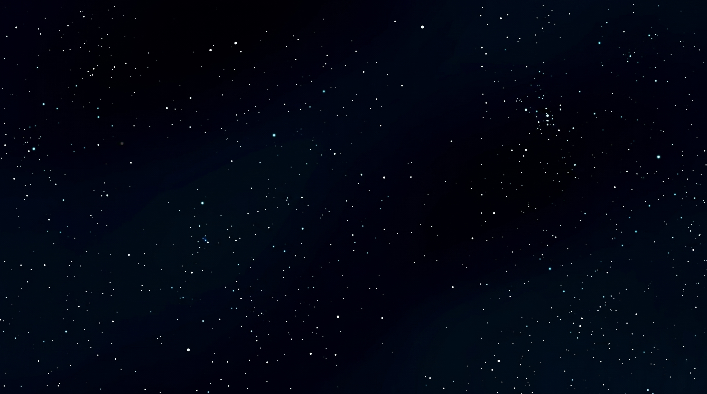
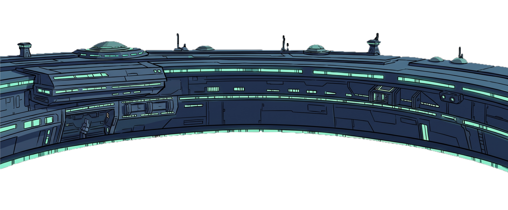
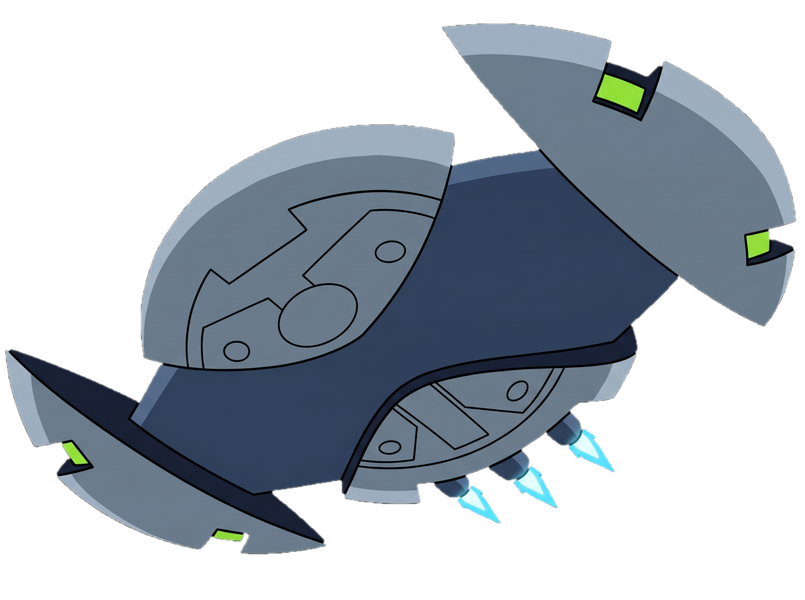
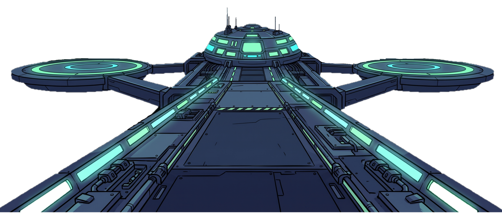

BEN 10 BEYOND


ROLE PARA EXPLORAR
↓
Sua Lenda
O RPG oficial de Ben 10 é um jogo de mesa de fantasia científica criado pela D20 Culture em parceria com a Warner Bros. Discovery . Crie seu personagem, descubra seus poderes e construa sua própria aventura.
Crie sua ficha ↗